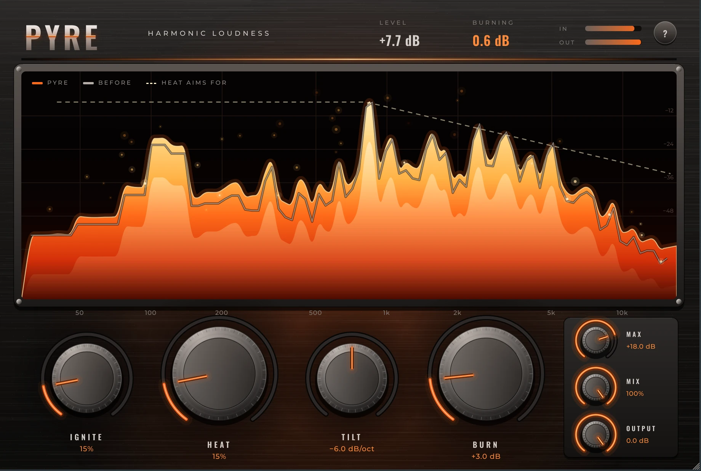

Precision sidechain
Harmonic loudness
Leads and synths, louder. PYRE finds every harmonic of the note and evens them out toward the dense, even spectrum of a saw, then drives the result into a soft ceiling. A thin lead comes out bright, thick and in your face, and it stays in tune.
Free · Windows: .zip with the VST3 and the app · macOS: installer with AU, VST3 and the app, for Apple Silicon and Intel
User manual (PDF) Want them all? Get the full suite of 8
Hear it
Bounced from a real session. Lead: a synth lead with a little IGNITE and HEAT and BURN at +3 dB, for level. Mix: a whole track through PYRE, gently: a touch of HEAT with TILT toward bright, and no BURN. The level change is real here; tick Match loudness to compare at equal volume.
Overview
PYRE is a loudness tool for leads, plucks, chords and synths. Most loudness plugins squash the level; PYRE works on the sound's harmonics instead. HEAT finds them in every moment (the peaks that stand out from the noise around them) and moves each one toward a line that falls a set number of dB per octave from the strongest, as a saw's harmonics do. Weak upper harmonics come up, overbearing ones come down, and the phases and the noise between them are left alone, so the notes and their character stay.
A dense, even spectrum sounds bigger and cuts through a mix, and it hides the clipping's own harmonics, so it can be pushed harder. BURN then drives it into a soft ceiling at −0.3 dBFS: that is where the level comes from. IGNITE, a drive in front, gives thin sounds (a sine, a soft square, a filtered pad) harmonics to work with.
Good for
Under the hood
Everything below moves together when you turn the knob, in this order.
A soft, asymmetric drive, 4x oversampled.
Finds the harmonics in every moment (an STFT, 2048 points) and moves each toward TILT's line, by HEAT, up to MAX. Both channels share the same gains.
Drive into a soft ceiling at −0.3 dBFS.
Blend with the untouched sound (delayed to match), then the output level.
Quick start
Reference
A soft, slightly asymmetric drive in front, 4x oversampled. It adds harmonics to thin sounds so HEAT has something to work with, and lifts quiet parts a little.
Evens out the harmonics. 0% leaves them as they are; 100% moves each one all the way to the line (up to MAX). Noise between the harmonics and the phases are left alone.
The slope HEAT aims for, from the strongest harmonic. −6 dB per octave is a saw. Left: darker, warmer. Right: brighter, more bite.
Drives the result into a soft ceiling at −0.3 dBFS. The level comes from here. At 0 dB the ceiling only catches the odd peak.
The most HEAT may raise any one harmonic. Lower it if quiet harmonics or hiss come up too much.
Blends the untouched sound back in, kept in time with PYRE's latency.
The level after everything.
The harmonics after PYRE as flames, the sound before PYRE as a grey ash line, and the line HEAT aims for, dashed. Embers rise from the hottest flames.
How much louder than the input, and how far BURN pushes into the ceiling.
Pop-up explanations when you hover over a control. Remembered for every project.
Every plugin window scales from 60% to 200%: drag the bottom-right corner. Double-click a knob to return it to its default.
Tips
Install
Open the downloaded .zip. Inside is the plugin (.vst3) and a standalone app.
Move the .vst3 to C:\Program Files\Common Files\VST3. Every Windows DAW looks there.
Let your DAW scan for new plugins. The plugin shows up under Noise Division.
Windows 10 or 11, 64-bit. VST3 host or the standalone app.
Double-click the .pkg. It installs the Audio Unit, the VST3 and the standalone app.
Open System Settings, Privacy & Security, scroll down and click Open Anyway. This shows once, because the installers aren't from the App Store.
Logic and GarageBand find the AU on their next start. Ableton Live, FL Studio, Reaper, Bitwig and Studio One use the VST3.
macOS 10.13 or newer, Apple Silicon or Intel. AU or VST3 host, or the standalone app.
Installation, every control, tips and troubleshooting in one PDF to keep next to your DAW.
Help
Lower MAX, or HEAT. Only peaks that stand 6 dB above their surroundings count as harmonics, but very noisy sounds have many.
Move TILT to the left, lower HEAT, or lower BURN.
Your DAW should compensate PYRE's 43 ms. If it doesn't (some live or low-latency modes), turn that mode off.
There are few harmonics to even out. Add some IGNITE.
Check the .vst3 is in C:\Program Files\Common Files\VST3 (Windows) and rescan. On a Mac, run the installer again and restart the DAW.
Rescan with Verify plugins ticked in the plugin manager.
System Settings, Privacy & Security, Open Anyway. The installers aren't signed with an Apple developer certificate yet.
Click More info, then Run anyway. This only concerns the standalone app.
Drag the bottom-right corner. Every plugin scales from 60% to 200% and remembers the size.
E-mail noisedivision@proton.me with the plugin name, version, your DAW and your operating system.
More from Noise Division
Precision sidechain

Soft clipper

Multiband distortion

One-knob mastering

Spectral compressor

One-knob darkener

Spectral distortion
Support
Everything here is free and stays free. If a plugin made it into your tracks and you want to say thanks, a donation pays for the time that goes into new plugins and updates.